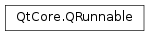

QRunnable¶
Synopsis¶
Functions¶
- def
autoDelete() - def
setAutoDelete(_autoDelete)
Detailed Description¶
The
PySide2.QtCore.QRunnableclass is the base class for all runnable objects.The
PySide2.QtCore.QRunnableclass is an interface for representing a task or piece of code that needs to be executed, represented by your reimplementation of thePySide2.QtCore.QRunnable.run()function.You can use
PySide2.QtCore.QThreadPoolto execute your code in a separate thread.PySide2.QtCore.QThreadPooldeletes thePySide2.QtCore.QRunnableautomatically ifPySide2.QtCore.QRunnable.autoDelete()returnstrue(the default). UsePySide2.QtCore.QRunnable.setAutoDelete()to change the auto-deletion flag.
PySide2.QtCore.QThreadPoolsupports executing the samePySide2.QtCore.QRunnablemore than once by callingQThreadPool.tryStart(this) from within thePySide2.QtCore.QRunnable.run()function. IfPySide2.QtCore.QRunnable.autoDelete()is enabled thePySide2.QtCore.QRunnablewill be deleted when the last thread exits the run function. CallingQThreadPool.start()multiple times with the samePySide2.QtCore.QRunnablewhenPySide2.QtCore.QRunnable.autoDelete()is enabled creates a race condition and is not recommended.See also
-
class
PySide2.QtCore.QRunnable¶ Constructs a
PySide2.QtCore.QRunnable. Auto-deletion is enabled by default.
-
PySide2.QtCore.QRunnable.autoDelete()¶ Return type: PySide2.QtCore.boolReturns
trueis auto-deletion is enabled; false otherwise.If auto-deletion is enabled,
PySide2.QtCore.QThreadPoolwill automatically delete this runnable after callingPySide2.QtCore.QRunnable.run(); otherwise, ownership remains with the application programmer.
-
PySide2.QtCore.QRunnable.run()¶ Implement this pure virtual function in your subclass.
-
PySide2.QtCore.QRunnable.setAutoDelete(_autoDelete)¶ Parameters: _autoDelete – PySide2.QtCore.boolEnables auto-deletion if
autoDeleteis true; otherwise auto-deletion is disabled.If auto-deletion is enabled,
PySide2.QtCore.QThreadPoolwill automatically delete this runnable after callingPySide2.QtCore.QRunnable.run(); otherwise, ownership remains with the application programmer.Note that this flag must be set before calling
QThreadPool.start(). Calling this function afterQThreadPool.start()results in undefined behavior.
© 2018 The Qt Company Ltd. Documentation contributions included herein are the copyrights of their respective owners. The documentation provided herein is licensed under the terms of the GNU Free Documentation License version 1.3 as published by the Free Software Foundation. Qt and respective logos are trademarks of The Qt Company Ltd. in Finland and/or other countries worldwide. All other trademarks are property of their respective owners.